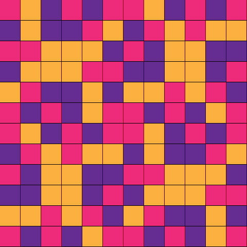
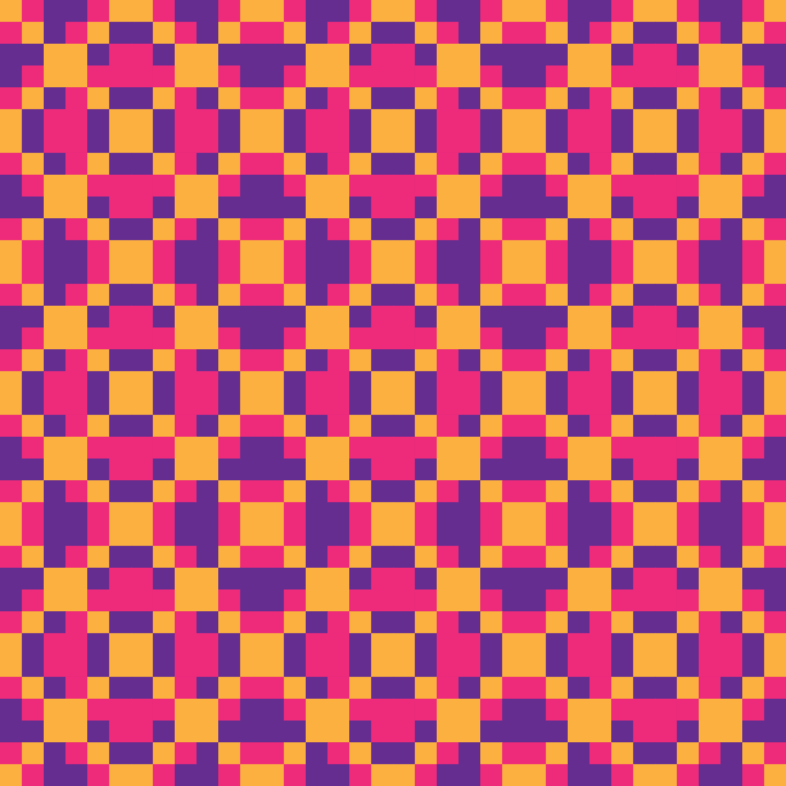
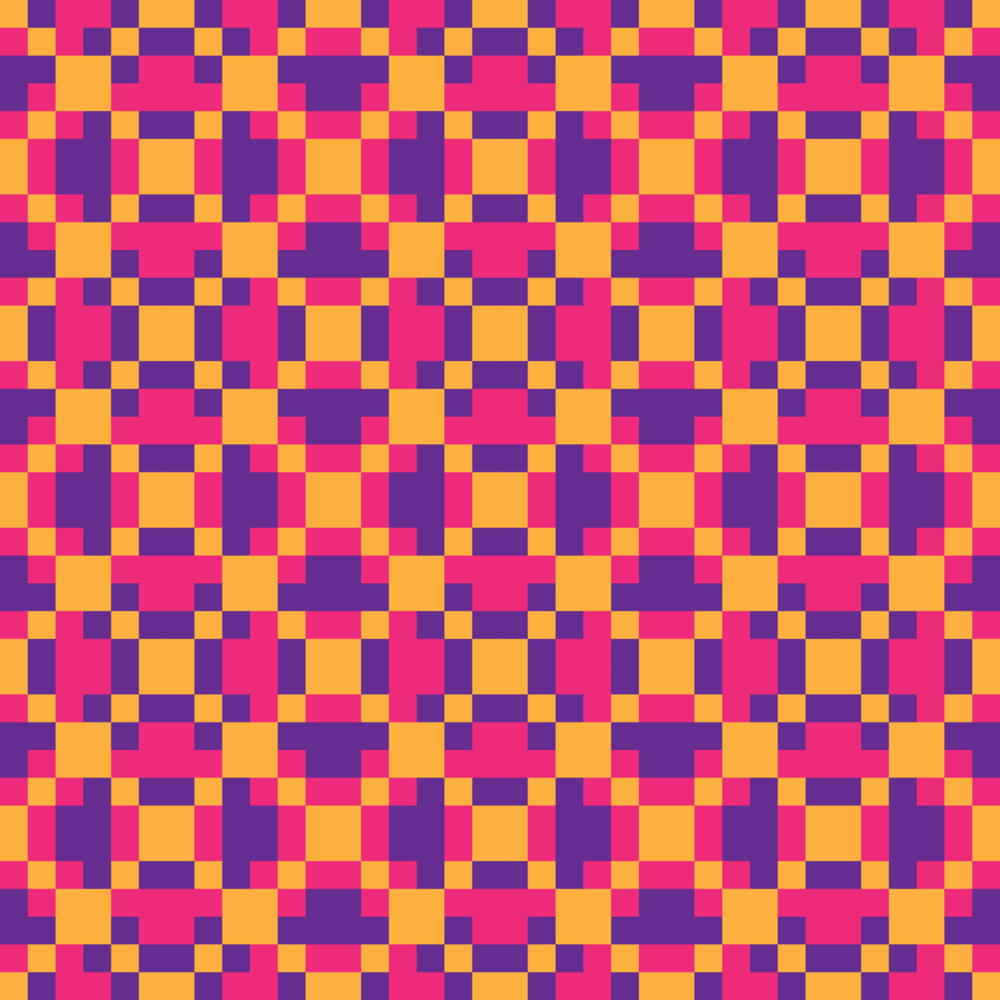
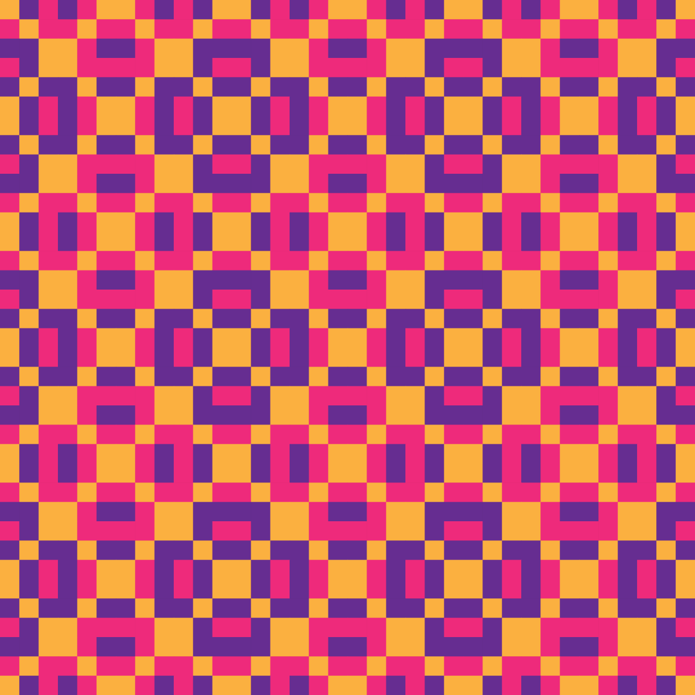
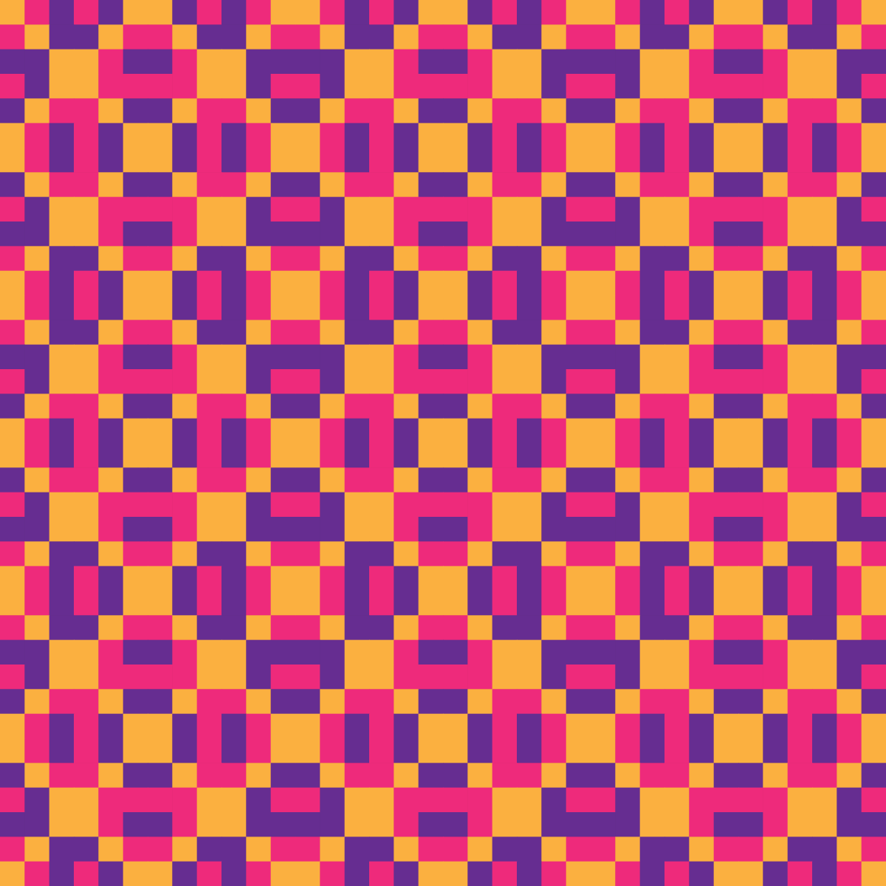
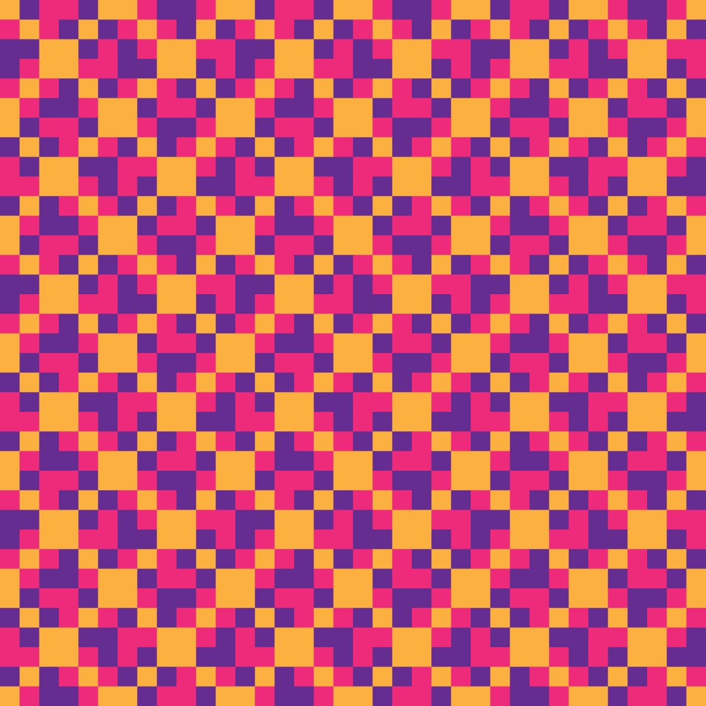
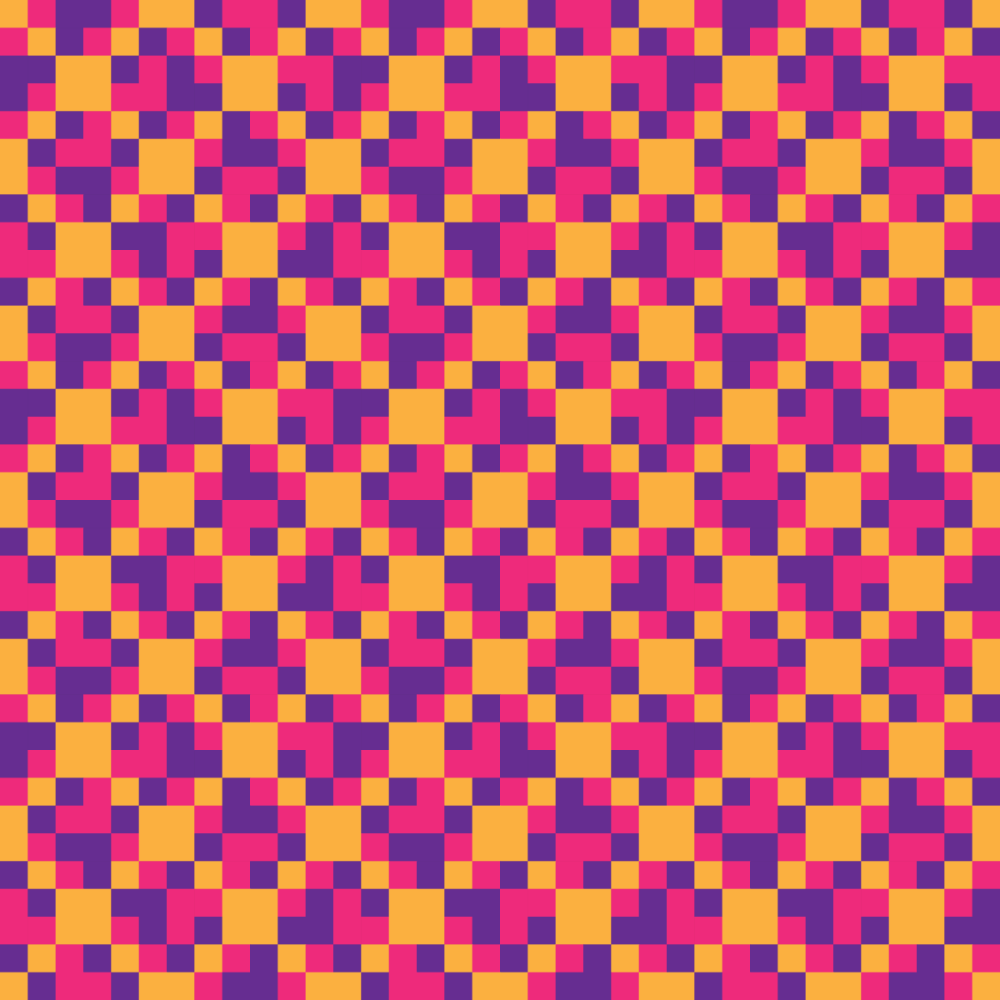
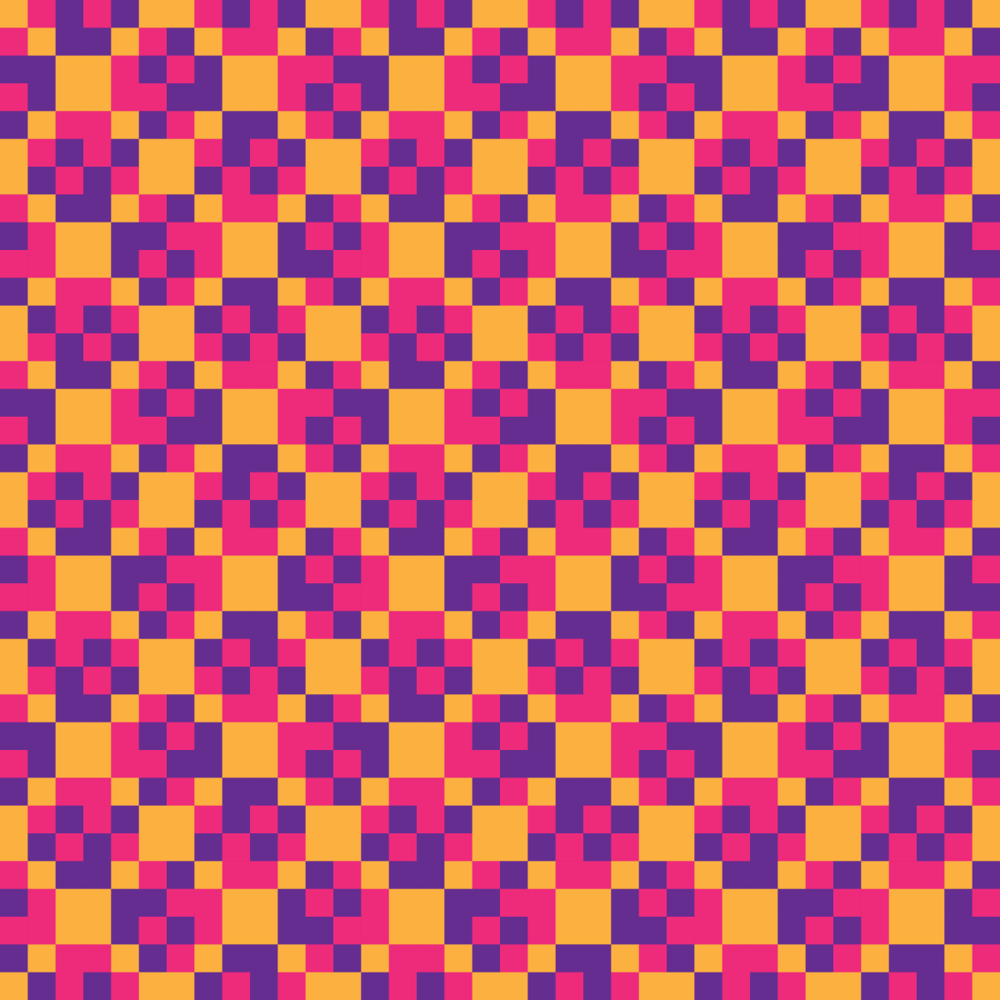
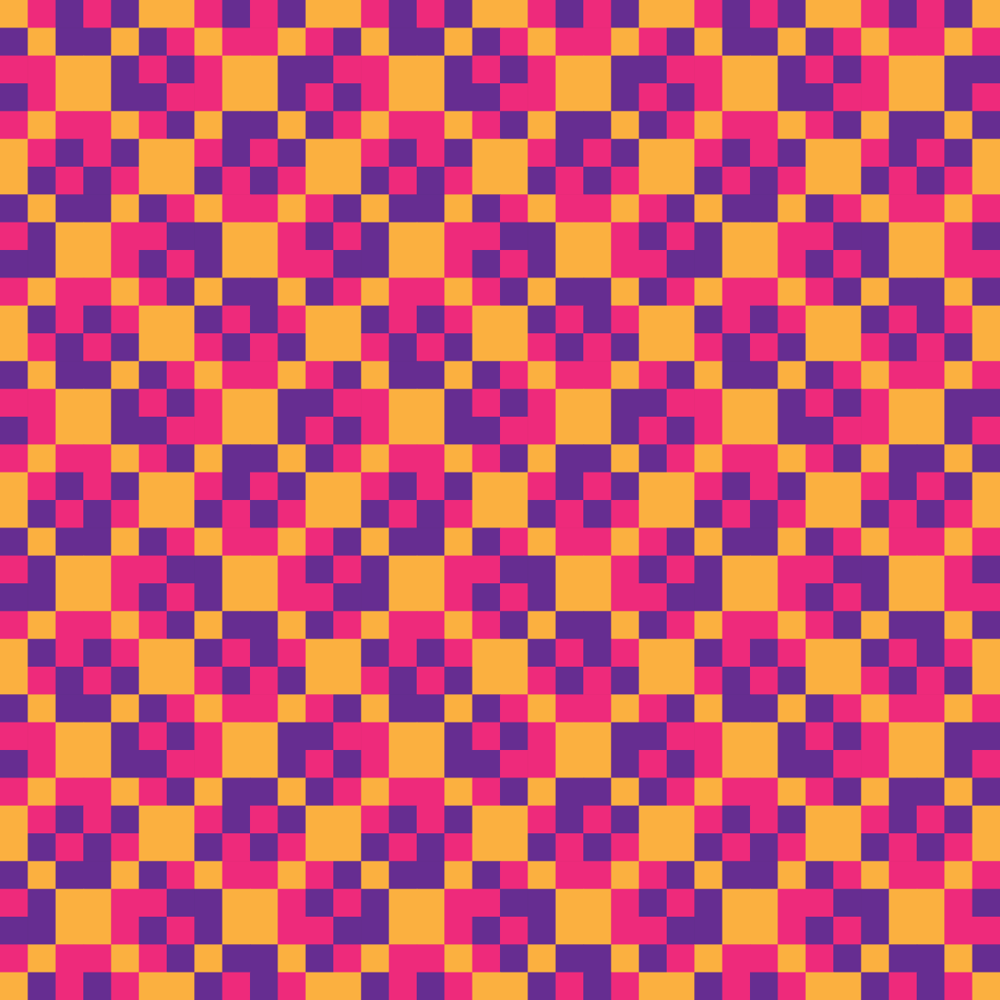

Autres langues : English · Español · ไทย
← Voir cet hexagramme sur l'échiquierHexagramme 14 — Heng, La Durée
N° chronologique 14 (ordre par poids binaires) · n° King Wen (traditionnel) 32 · 恆
Par Anibal Edelberto Amiot — Mis à jour le 18 septembre 2026

le fils aîné
la fille aînée
Le Tonnerre et le Vent : l'image de la durée. Deux mouvements différents par nature s'associent ici sans se contredire, chacun renforçant l'autre dans une constance partagée. C'est la figure de la persévérance qui ne s'use pas. Ainsi l'homme de bien se tient debout sans changer de direction : durer n'est pas résister à l'immobile, c'est trouver le mouvement qui peut se répéter indéfiniment sans se trahir.
La constance dans le temps traverse l'épreuve du repli. Ce qui dure vraiment n'est pas ce qui refuse tout changement, mais ce qui sait, quand il le faut, se retirer un temps sans perdre sa direction propre. Ce trait enseigne que la durée véritable inclut ses propres pauses.
Les six traits
À la base de la terre, le vide se referme : ce qui n'était encore qu'une ouverture commence à se remplir.
La terre affermie touche à sa limite : la solidité qui soutenait l'édifice s'apprête à changer de nature.
Au seuil entre terre et homme, la force vacille : ce qui agissait par fermeté hésite avant de se retourner.
Dans l'action de l'homme, le plein trouve sa borne : l'initiative qui menait la figure se replie sur elle-même.
À la place du sage, le vide s'emplit : la souplesse qui gouvernait avec discrétion se charge d'une force nouvelle.
Au sommet, le vide atteint son comble et se referme : l'ouverture la plus extrême bascule vers son contraire.
Sources : La Livrée d'Hermès, Anibal Amiot — chapitre 7.1 « Trame » (p. 63 à 68).
Pour comprendre les notions évoquées ici — carré magique, calque et tirage, Yi-King — consultez le lexique du projet.
Les motifs de cet hexagramme
Huit motifs Jacquard 12×12 sont engendrés à partir de cet hexagramme, un par famille admissible du système. Chacun a sa page : cellule, pavage, recoloriages et données.

Bases — Yang mut
Bases — Yang
Par 2 — Yang + Yin mut
Par 2 — Yin mut + Yang mut
Par 2 — Yin + Yang
Par 2 — Yin + Yang mut
Par 3 — Sans Yang
Par 3 — Sans Yang mutHexagrammes voisins
13 — Feng, L'Abondance · 15 — Da Zhuang, La Puissance du grand
Hexagrammes liés par un trigramme commun
Trigramme supérieur commun (☳ Zhen) : 8 — Yu, L'Enthousiasme · 9 — Zhen, L'Ébranlement · 10 — Jie, La Délivrance · 11 — Gui Mei, L'Épousée · 12 — Xiao Guo, La Prépondérance du petit · 13 — Feng, L'Abondance · 15 — Da Zhuang, La Puissance du grand
Trigramme inférieur commun (☴ Xun) : 6 — Sheng, La Poussée vers le haut · 22 — Jing, Le Puits · 30 — Da Guo, La Prépondérance du grand · 38 — Gu, Le Travail sur ce qui est gâté · 46 — Ding, Le Chaudron · 54 — Xun, Le Doux, le Vent · 62 — Gou, Venir à la rencontre